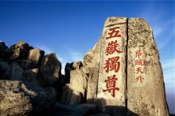
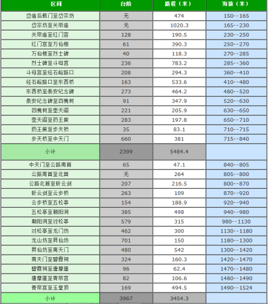
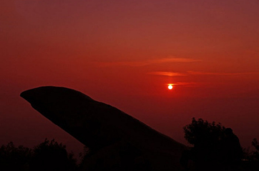
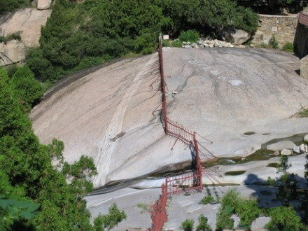
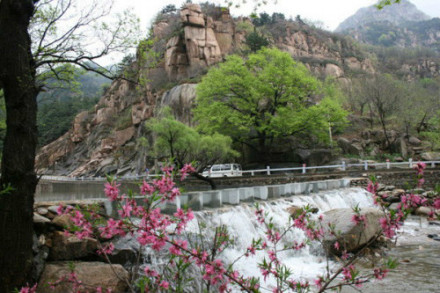
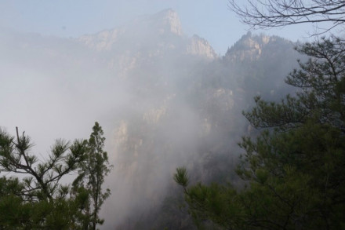

| 泰安 | |||||
|---|---|---|---|---|---|
| 首页 | 历史沿革 | 地理环境 | 泰山文化 | 历史文化 | |
|
简介

泰山，又名岱山、岱宗、岱岳、东岳、泰岳，为五岳之一，有“五岳之首”“天下第一山”之称。位于山东省中部，隶属于泰安市，绵亘于泰安、济南、淄博三市之间，总面积2.42万公顷，主峰玉皇顶海拔1532.7米。
泰山承载着丰厚的地理历史文化内涵，被古人视为“直通帝座”的天堂，成为百姓崇拜，帝王告祭的神山，有“泰山安，四海皆安”的说法。自秦始皇开始到清代，先后有13代帝王依次亲登泰山封禅或祭祀，另外有24代帝王遣官祭祀72次。山体上既有寺庙、宫、观等古建筑群29处，古遗址128处，有大小碑碣、摩崖石刻2000余处。
1982年，泰山被列入第一批国家级风景名胜区。1987年，泰山被联合国教科文组织批准列为中国第一个世界文化与自然双重遗产。2002年，泰山被评为“中华十大文化名山”之首。2006年，泰山因其独特的地质价值，成为世界地质公园。2007年，泰山被评为国家AAAAA级旅游景区。
地理环境
位置境域
泰山贯穿山东中部，在泰安市境内，绵亘于泰安市、济南市、淄博市之间，古称“岱山”、“岱宗”，春秋时改称“泰山”。泰山前邻孔子故里曲阜，背依泉城济南。泰山雄起于华北平原之东，凌驾于齐鲁平原之上，东临大海，西靠黄河，南有汶、泗、淮之水，东西长约200千米，南北宽约50千米，主脉，支脉，余脉涉及周边十余县，盘卧面积达426平方千米，主峰玉皇顶海拔1532.7米。
地质特点
泰山的地质构造十分复杂，以断裂为主，其构造特点为断块掀斜抬升。既有前寒武纪形成的构造，又有中新生代发育的构造。
泰山的前寒武纪地质构造发育以多期的褶皱、断裂以及韧性剪切带为其主要特征。它们彼此叠加相互改造，构成了极其复杂的构造面貌，对它们的成因机制研究是前寒武纪地质研究的重要内容之一。另外，中元古代辉绿玢岩发育的国内外罕见的“桶状构造”，具有很高的科学价值。
从区域构造看，太平洋板块以近东西方向对欧亚板块的强烈俯冲，使泰山地区在近南北向伸展作用下，北东东向泰前断裂发生强烈掀斜活动，泰山大幅度抬升，致使泰山的新构造运动表现得十分普遍和强烈，它们对泰山的形成及地貌格局起着主导性的控制作用。泰山周围的下古生界和前寒武纪结晶基底不整合面上形成的重力滑动构造也与新构造运动有密切的关系
地形地貌
泰山是山东丘陵中最高大的山脉，地层为华北地台典型基底和盖层结构区，南部上升幅度大，盖层被风化掉了，露出大片基底——泰山杂岩，即太古界泰山群地层，其绝对年龄25亿年左右，是中国最古老的地层之一。北部上升幅度小，盖层保存着典型的华北地台上发育的古生代地层。泰山地貌分为冲洪积台地、剥蚀堆积丘陵、构造剥蚀低山和侵蚀构造中低山四大类型，在空间形象上，由低而高，造成层峦叠峰、凌空高耸的巍峨之势，形成多种地形群体组合的地貌景观。
登山线
泰山具有极其美丽壮观的自然风景，其主要特点为雄、奇、险、秀、幽、奥等。泰山巍峨，雄奇，沉浑，峻秀的自然景观常令世人慨叹，更有数不清的名胜古迹，摩崖碑碣，使泰山成了世界少有的历史文化与自然相结合的游览胜地。
泰山常规的是四条线：

1.第一条：最经典的红门路徒步中线，其实是中线登封御道。
岱庙—红门—岱顶这条古老的传统线路。
2.第二条是坐汽车上山的环山公路线，也可以徒步爬山。
天外村（天地广场）—环山路—竹林寺—黄溪河水库—中天门—南天门—玉皇顶
3.第三条是从西北侧山口进，也就是是桃花源入口，为环山公路，也可徒步爬山。
桃花峪入口—环山公路—彩石溪—赤磷鱼保护区—桃花源索道—南天门—玉皇顶
4.第四条是东北侧山口方向，一般说是天烛峰，也就是后山。
泰山旅游圈
1.泰山印象—中华泰山封禅大典。投资近3亿的囊括秦汉唐宋元明清的大型山水实景演出。
2.泰山花样年华。投资6亿元，对口港澳台地区，日本，东南亚。集观光、采摘、展销、餐饮于一体的大型农业旅游文化项目。
3.泰山方特欢乐世界。广东深圳与山东省共建，投资近30亿的仅次于上海迪斯尼的大型游乐场。
4.泰山—东平湖—梁山泊—水浒文化旅游区。在泰山西部东平县东平湖，为梁山泊遗存水域。为新版水浒传的拍摄场地，是泰安—东平水浒文化影视城是江北著名的影视城。
5.泰山东麓—泰山明清古村。投资近3亿的明清古民居复原项目。
6.泰山支脉—徂徕山，李白在山东泰山的隐居地，山东人民抗日战争第一枪—徂徕山大寺起义地。
7.泰山支脉—新泰莲花山，和圣—柳下惠故里，北方普陀—莲花山。
8.太阳部落景区。中国首家展现史前文明的特大型主题公园，坐落在泰安市岱岳区满庄镇。
景区景点
六大风景区

泰山四大奇观
游泰山的最佳时间为每年的5月到11月。游泰山看四个奇观：泰山日出、云海玉盘、晚霞夕照、黄河金带。
阴阳界

在泰山长寿桥南面的石坪上，东百丈崖的顶端，有一横跨两岸垂直河谷的浅白色岩带，好像一条白色纹带绣于峭壁边缘，因长年流水的冲刷，表面光滑如镜，色调鲜明，十分醒目。越过它稍有不慎，就会失足跌落崖下，坠谷身亡，故名之为“阴阳界”。
桥下的石坪为傲徕山中粒片麻状二长花岗岩，质地坚硬，抗风化剥蚀能力比较强，经长期风化剥蚀和溪水的冲刷，形成了这样宽大而平滑的大石坪。所谓“阴阳界”，实际上是一条由长石和石英组成的花岗质岩脉，表面呈灰白色，脉宽1—1.2米，沿南东130°方向延伸，近于直立产出在二长花岗岩中，与围岩的界线十分清晰，产状稳定，直线状展布，色调鲜明，又位于东百丈崖的峭壁边缘，地势甚为险峻。古人把这条岩脉看作阳间与阴间的分界线。
桃花峪

桃花峪，位于岱顶西北，有索道缆车直通岱顶。在索道站周围出露的岩石，主要是傲徕山中粒片麻状二长花岗岩。其东侧有北西向龙角山断裂通过，断裂两旁发育有与其基本平行的伴生断裂。其中一条伴生断裂切过一个山头，生成约5米宽的节理密集带，节理面近于直立，把二长花岗岩切割成许多薄板状岩块，在重力作用下岩块沿直立节理面不断坍塌，最后形成两峰对峙的一条几米宽的大裂缝，这就是有名的桃花峪一线天。
彩石溪不仅是泰山奇石的重要产地，据泰山工作人员的调查发现认为在彩石溪存在着以基性斜长角闪岩（基性火山岩）为主的一套表壳岩系统，属于泰山岩群。原岩是酸性火山岩和酸性火山凝灰岩，构成双峰式的。由于强烈变形，基性火山岩已经被拉成构造补丁，而且它的构造变形被后期切断，后期的脉体又被切断了。另外有糜棱岩化的现象，构造、地层等地质现象非常丰富。

傲徕峰
扇子崖之西是傲徕峰，因巍峨突起，有与泰山主峰争雄之势，古有民谚：“傲徕高，傲徕高，近看与岱齐，远看在山腰”。傲徕峰与扇子崖结合处为山口，在山口之后是青桐涧，其深莫测，涧北为壶瓶崖，危崖千仞。站在山口，东看扇子崖，如半壁残垣，摇摇欲坠，让人心惊目眩，西望傲徕峰，似与天庭相接，北眺壶瓶崖，绝壁入云。扇子崖和傲徕峰一带出露的岩石，均为傲徕山中粒片麻状二长花岗岩。
人文历史
综述
泰山是世界文化与自然双重遗产，世界地质公园，国家AAAAA级旅游景区，国家级风景名胜区，全国重点文物保护单位，全国文明风景旅游区。 [4]
泰山被古人视为“直通帝座”的天堂，成为百姓崇拜，帝王告祭的神山，有“泰山安，四海皆安”的说法。自秦始皇开始到清代，先后有13代帝王引次亲登泰山封禅或祭祀，另外有24代帝王遣官祭祀72次。 [2-3]
泰山是中华民族的象征，是东方文化的缩影，是“天人合一”思想的寄托之地，是中华民族精神的家园。
历史地位
远古时始称火山、太山，“大”在甲骨文与金文中均见其形，读音为“太”。且“太山'意为“大山”,先秦古文中，“大”、“太”通用。《骈雅训纂·释名称》：“古人太字多不加点，如大极、大初、大室、大庙、大学之类，后人加点以别大小之大，遂分为二矣。”按古文字的传统读法，“大”亦有“大”、“太”、“代”三音。春秋战国时，由于同音字的引申和同义字的演变，“太”与“泰”、“代”与“岱”“岱”与“岳”也互相变通了，这样相继出现了“泰山”、“岱山”、“岱宗”、“岱岳”等专用名称。“泰山”之称最早见于《诗经》。“泰”意为极大、通畅、安宁。《易·说卦》“履而泰，然后安”。“泰”字就有原来的高大、通畅之意引申为，“大而稳，稳而安”。随即出现了“稳如泰山”、“国泰民安”、“泰山鸿毛”之说。
五岳为群山之尊，泰山为五岳之长。五岳是中国五大名山的总称，一般指东岳泰山（位于山东）、西岳华山（位于陕西）、南岳衡山（位于湖南）、北岳恒山（位于山西）、中岳嵩山（位于河南）。泰山因其气势之磅礴，又有“天下名山第一”的美誉。泰山地区早在远古时代就已经成为东方文化的重要发祥地，5万年前的新泰人化石遗存和40万年前的沂源人化石遗存显示出这一带早期的人类活动。泰山南麓的大汶口文化，北麓的龙山文化遗存也反映出早期黄河流域氏族部落的活动状况。战国时期，齐国沿泰山山脉直达黄海边修筑了长约500千米的长城，今遗址犹存。进入秦汉之后，泰山逐渐成为政权的象征。泰山实际海拔高度并不太高，在五岳中次于华山、恒山，仅占第三位。但就历史政治及文化的地位而言，全国的许多大山与之相比都不能望其项背。
古人形容“泰山吞西华，压南衡，驾中嵩，轶北恒，为五岳之长”。中国古代神话传说中，盘古死后，头部化为泰山。据《史记集解》所载：“天高不可及，于泰山上立封禅而祭之，冀近神灵也。”古代传统文化认为，东方为万物交替、初春发生之地，故泰山有“五岳之长”、“五岳独尊”的称誉。自古以来，中国人就崇拜泰山，有“泰山安，四海皆安”的说法。古代历朝历代不断在泰山封禅和祭祀，并在泰山上下建庙塑神，刻石题字。古代的文人雅士对泰山仰慕备至。泰山宏大的山体上留下了20余处古建筑群，2200余处碑碣石刻。
泰山崛起于华北平原之东，凌驾于齐鲁平原之上，东临烟波浩淼的大海，西靠源远流长的黄河，南有汶、泗、淮之水，与平原、丘陵相对高差1300米，形成强烈的对比，因而在视觉上显得格外高大的节奏感和“一览众山小”的高旷气势；山脉绵亘100余千米，盘卧426平方千米，其基础宽大产生安稳感，形体庞大而集中则产生厚重感，大有“镇坤维而不摇”之威仪。所谓“稳如泰山”、“重如泰山”，正是其自然特征在人们生理、心理上的反映。六朝任昉《述异记》载，秦汉时，民间传说盘古氏（远古时开天辟地,代生万物的神人）死后头为东岳，左臂为南岳，右臂为北岳，足为西岳。盘古尸体的头向东方，而且化为东岳，泰山就成了当然的五岳之首了。这显然是根据“五行”、“五德”学说创作的神话故事，反映了泰山独尊五岳的历史背景。
文化底蕴
因为东方是生命之源，希望和吉祥的象征。而古代中国先民又往往把雄伟奇特的东岳视为神灵，把山神作为祈求风调雨顺的对象来崇拜，于是，地处东方的泰山便成了“万物孕育之所”的“吉祥之山”、“神灵之宅”。受天命而帝王的“天子”更把泰山看成是国家统一，权力的象征。为答谢天帝的“授命”之恩，也必到泰山封神祭祀。
据相关文献记载，先秦时期来过泰山的帝王就有无怀氏、伏羲氏、神农氏、炎帝、黄帝、颛顼、帝喾、尧、舜、禹、汤、周成王、鲁僖公、鲁宣公、齐灵公、吴王夫差等 [41] 。相传远古时期，黄帝曾登过泰山，舜帝曾巡狩泰山。商周时期，商王相土在泰山脚下建东都，周天子以泰山为界建齐鲁；传说中秦汉以前，就有72代君王到泰山封神，此后秦始皇（前219年）、秦二世、汉武帝（前110年、前109年、前106年、前104年、前103年、前98年、前93年、前89年）、汉光武帝（56年）、汉章帝（85年）、汉安帝（124年）、隋文帝（595年）、唐高宗（666年）、武则天、唐玄宗（725年）、宋真宗（1008年）、清帝康熙、乾隆等古帝王接踵到泰山封禅致祭，刻石纪功。自秦汉至明清，历代皇帝到泰山封禅27次。历代帝王借助泰山的神威巩固自己的统治，使泰山的神圣地位被抬到了无以复加的程度。
除帝王将相外，千百年来，亦有众多文人名士都向往登临泰山，饱览中国第一名山，抒发自己的豪情壮志，如春秋时的至圣孔子、和圣柳下惠、史圣左丘明、乐圣师旷、名相鲍叔牙，秦汉之际的淳于越，西汉的司马迁，东汉的张衡，三国时代的曹操、曹植父子、晋代的陆机，南朝诗人谢灵运，唐代的李白、杜甫、刘禹锡，宋代政治家文学家范仲淹、欧阳修、苏辙、苏轼、赵明诚与李清照夫妇、石介、孙复、胡瑗、辛弃疾，金代文学大家元好问、王若虚、党怀英、杜仁杰、郝经，元代的王旭、张养浩，明代的宋濂、刘基、王蒙、高启、王守仁、边贡、王世贞、于慎行、萧大亨、董其昌、宋焘，清代的王士祯、施闰章、朱彝尊、姚鼐、赵国麟，近代的冯玉祥等等。 [41]
皇帝的封禅活动和雄伟多姿的壮丽景色，历代文化名人纷至泰山进行诗文著述，留下了数以千计的诗文刻石。如孔子的《邱陵歌》、司马迁的《封禅书》、曹植的《飞龙篇》、李白的《泰山吟》、杜甫的《望岳》等诗文，成为中国的传世名篇；天贶殿的宋代壁画、灵岩寺的宋代彩塑罗汉像是稀世珍品；泰山的石刻、碑碣，集中国书法艺术之大成，真草隶篆各体俱全，颜柳欧赵各派毕至，是中国历代书法及石刻艺术的博览馆。泰山文化遗产极为丰富，现存古遗址97处，古建筑群22处，对研究中国古代建筑史提供了重要实物资料。 [21]
泰山是黄河流域古代文化的发祥地之一。很早以前，泰山周围就被人类所开发，泰山南麓的大汶口文化，北麓的龙山文化遗存，便是佐证。再早还有5万年前的新泰人化石遗存和40万年前的沂源人化石遗存。战国时期，沿泰山山脉直达黄海边修筑了长约500千米的长城，今遗址犹存。泰山与孔子活动有关的景点有孔子登临处坊、望吴圣迹坊、孔子小天下处、孔子庙、瞻鲁台、猛虎沟等。神山、文化宝库泰山有“五岳之首”、“五岳独尊”的称誉。它是政权的象征，成为一座神圣的山。
泰山宗教发祥久远，佛教于4世纪中期传入泰山。后赵永宁二年（351年）高僧朗公首先到泰山岱阴创建了朗公寺和灵岩寺。魏晋南北朝时期，泰山较大的寺院有谷山玉皇寺、神宝寺、普照寺等。著名的泰山经石峪是北齐人所刻的佛教经典《金刚经》。唐宋时，灵岩寺极为鼎盛，唐宰相李吉甫反把泰山灵岩寺称为天下“四绝”之一。泰山道教早在战国时就有方士隐居岱阴岩洞；秦汉后词庙林立，现存有王母池（群王庵）、老君堂、斗母宫（龙泉观）、碧霞祠、后石坞庙、元始天尊庙等。其中以王母池为最早，创建于东汉建安二十五年（220年）以前；以碧霞祠影响最大。泰山是王母娘娘神话传说的发祥地。早在魏晋时期就建有王母池道观。王母池位于泰山南麓环山路东首，古称“群玉庵”，又名“瑶池”。三国魏曹植有“东过王母庐”的诗句，唐李白有“朝饮王母池”的吟咏。诗人王心鉴在《登岳》一诗中亦有：“优游沐清风，骋怀啸岱山。汉柏揖朝华，秦松别暮烟。云海洗心尘，天路褪狂狷。由来访胜境，乾坤此为巅。”的诗句赞之
神话传说
盘古开天
盘古开天东岳为首天下名山无数，历代帝王和芸芸众生何以独尊东岳泰山呢？传说，在很早很早以前，世界初成，天地刚分，有一个叫盘古的人生长在天地之间，天空每日升高一丈，大地每日厚一丈，盘古也每日长高一丈。如此日复一日，年复一年，他就这样顶天立地生活着。经过了漫长的一万八千年，天极高，地极厚，盘古也长得极高，他呼吸的气化作了风，他呼吸的声音化作了雷鸣，他的眼睛一眨一眨的，闪出道道蓝光，这就是闪电，他高兴时天空就变得艳阳晴和，他生气时天空就变得阴雨连绵。后来盘古慢慢地衰老了，最后终于溘然长逝。刹那间巨人倒地，他的头变成了东岳，腹变成了中岳，左臂变成了南岳，右臂变成了北岳，两脚变成了西岳，眼睛变成了日月，毛发变成了草木，汗水变成了江河。因为盘古开天辟地，造就了世界，后人尊其为人类祖先，他的头部变成泰山。所以，泰山就被称为“天下第一山”，成了五岳之首。
东岳大帝
东岳大帝为泰山神，又称泰山君、五岳君，排于玉清元宫之第二位，冠五岳之首。相传为盘古王的第五代孙，它掌握人们的魂魄，主掌世人生死、贵贱和官职，是万物之始成地。自战国至汉代，泰山始终是君主告成于天的封禅圣地。
碧霞元君
碧霞元君即天仙玉女泰山碧霞元君，俗称泰山娘娘、泰山老奶奶、泰山老母等，道教认为，碧霞元君“庇佑众生，灵应九州”，“统摄岳府神兵，照察人间善恶”，是道教中的重要女神，中国历史上影响最大的女神之一。
至于碧霞元君的来历，一说为黄帝所遣之玉女，一说为华山玉女。但一般作为泰山女神，为泰山神之女。
世界遗产
1987年12月12日，根据世界遗产遴选标准 (Ⅰ)(Ⅱ)(Ⅲ)(Ⅳ)(Ⅴ)(Ⅵ)(Ⅶ)，泰山（Mount Tai）被联合国教科文组织列入《世界遗产名录》（编号437）的世界文化与自然双重遗产，成为中国世界遗产之一。世界遗产委员会对泰山的评价是：近两千年来，庄严神圣的泰山一直是帝王朝拜的对象。山中的人文杰作与自然景观完美和谐地融合在一起。泰山一直是中国艺术家和学者的精神源泉，是古代中国文明和信仰的象征。 [25]
2011年11月，中国泰山风景名胜区与美国美洲杉和国王峡谷国家公园（Sequoia & Kings Canyon National Parks，美洲杉国家公园和国王峡谷国家公园）缔结姊妹公园。
|
|||||
| 班级：2022云计算 姓名：徐自硕 学号：202202060032 | |||||